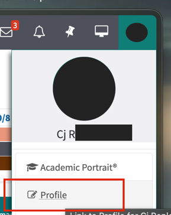
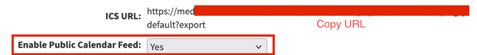
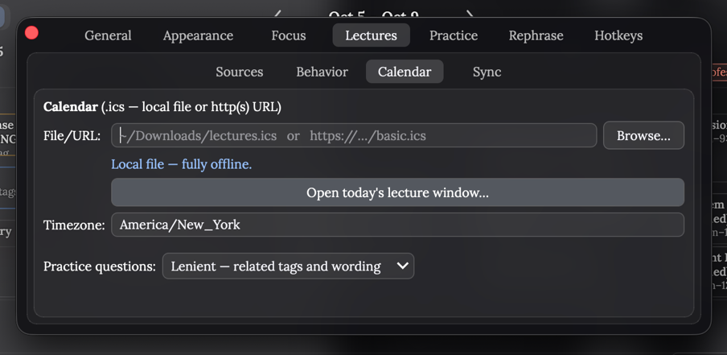
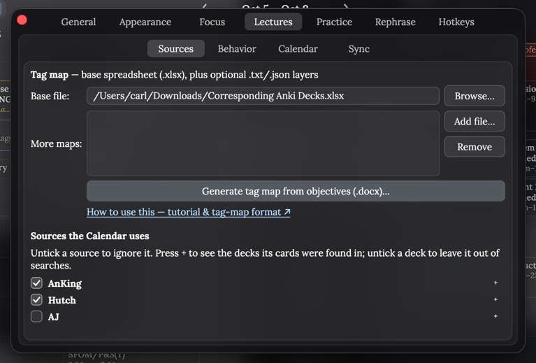

Setup
Get your lecture calendar and cards into Janki in a few minutes.
-
Install Janki from the Janki page, then restart Anki.
-
Open LEO and go to your Profile.

-
Set Enable Public Calendar Feed to Yes, then copy the ICS URL above it.

-
Open Janki's settings: click the settings gear (top right), or Tools → Janki: Settings…. Go to Lectures → Calendar and paste the URL into File/URL.

-
Download one of these spreadsheets as an .xlsx (in Google Sheets: File → Download → Microsoft Excel):
- Lecture tag sheet
- AnKing tag sheet (better for AnKing)
-
In Lectures → Sources, click Browse… next to Base file and pick the .xlsx you downloaded. Then tick the decks you use under Sources.

AnKing can slow things down, especially on older computers. If Anki feels laggy, untick AnKing.
-
Done. Open the Calendar in Janki to see your classes, or use Tools → Load today's lectures to unsuspend today's cards.